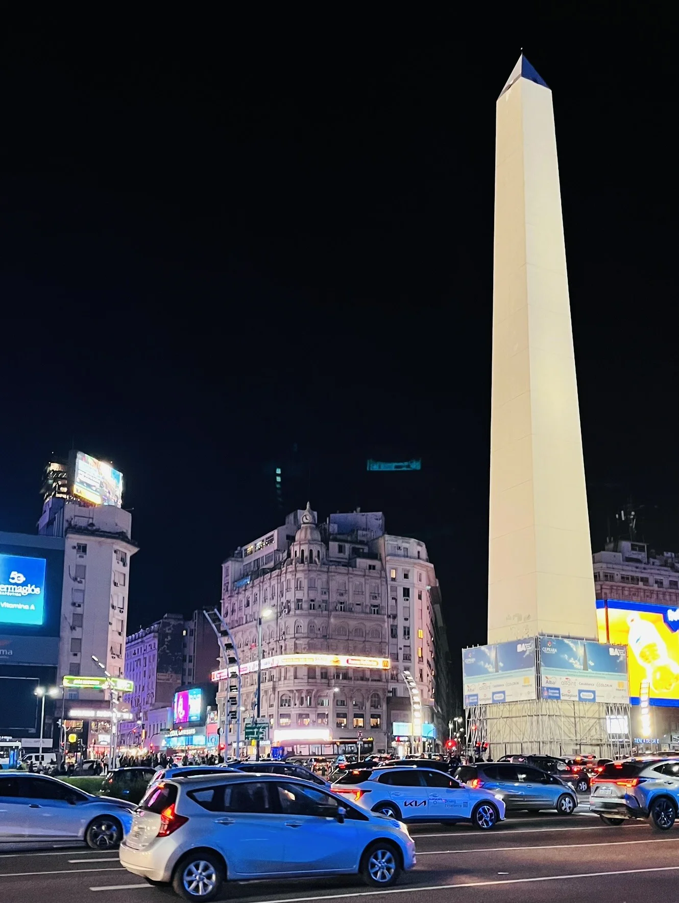
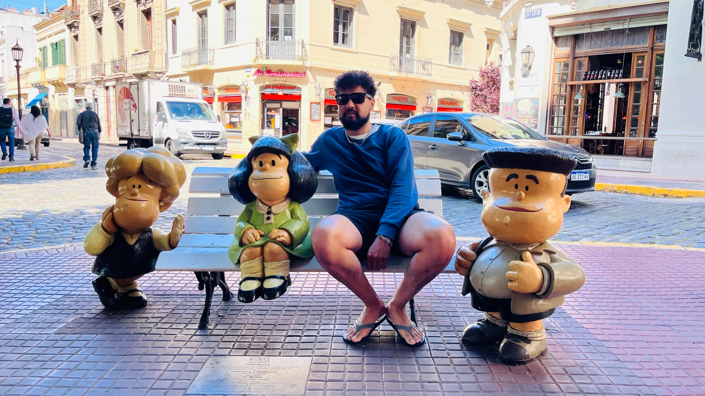
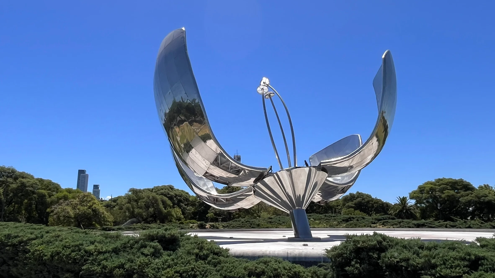
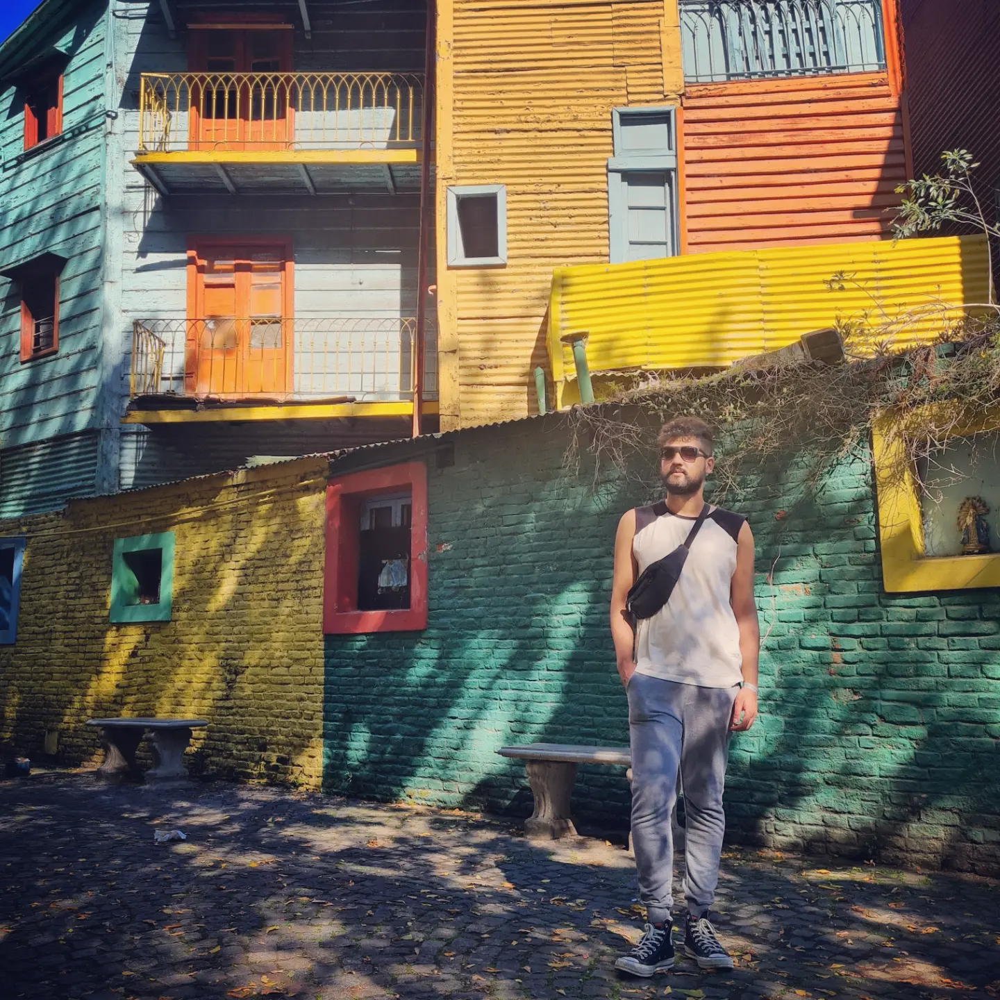

Veja também: como está o custo de vida na Argentina em 2025.
Apesar dos altos preços, Buenos Aires ainda oferece uma infinidade de atrações gratuitas ou de baixo custo — perfeitas pra quem quer explorar a cidade com autenticidade, sem esvaziar o bolso. O melhor jeito de montar seu roteiro é dividir os pontos turísticos por região. Neste post, trago os principais lugares gratuitos (ou quase) para visitar, com comentários reais de quem já bateu muita perna por lá.
Obelisco e Av. Corrientes: cartões-postais imperdíveis
Uma visita à Argentina quase sempre começa no clássico Obelisco, localizado no cruzamento da Av. 9 de Julio com a Av. Corrientes. É símbolo da cidade, embora muitos argentinos considerem que existam ícones mais representativos. Em frente, há as famosas letras "BA" — dica: evite a fila e tire a foto de um ângulo lateral, enquanto as pessoas estão se revezando. Não é furar fila, é jogo de cintura.
À noite, a Av. Corrientes vira uma mini Broadway portenha, com teatros e fachadas iluminadas. Tem algo nessa região que sempre me lembra pizza e sorvete — talvez seja o clima boêmio ou a fome depois das caminhadas.
Teatro Colón: cultura e arquitetura impressionantes
A duas quadras do Obelisco está o belíssimo Teatro Colón, uma das casas de ópera mais importantes do mundo. Eu nunca fiz a visita guiada (é paga), mas amigos que foram disseram que compensa mais comprar ingresso para um espetáculo. A experiência é mais completa e os ingressos começam a partir de R$ 40. Só compre com antecedência — esgota rápido.
Microcentro e Calle Florida: arte, compras e atenção redobrada
O coração comercial da cidade. O Microcentro é onde fica a famosa Calle Florida, cheia de lojas, artistas de rua e locais para trocar dinheiro. Cuidado com notas falsas — como no Brasil, dá pra identificar pelas marcas de segurança. A região mistura arquitetura clássica, movimento intenso e bons preços para almoço. Mas atenção: furtos aumentaram nos últimos anos, então vale redobrar os cuidados com pertences.
Centro Histórico: Plaza de Mayo, Catedral e Casa Rosada
A Plaza de Mayo é o marco histórico e político de Buenos Aires. Ali estão a Casa Rosada, sede do governo argentino; a Catedral Metropolitana, onde o Papa Francisco celebrava missas; e o Cabildo, que abriga um museu histórico. Dentro da Catedral está o mausoléu de San Martín, figura central da independência argentina. A cada duas horas ímpares, rola a troca de guarda — e vale assistir.
San Telmo
O bairro de San Telmo respira tradição. Aos domingos, a feira de antiguidades toma conta da região — é uma bagunça deliciosa. Tem de tudo: discos, objetos antigos, comida de rua e muito tango. Os destaques são o Mercado de San Telmo e a estátua da Mafalda. Se quiser evitar multidão, visite em outro dia da semana.
Puerto Madero: passeio moderno e gratuito
Bairro moderno, elegante e à beira do rio, Puerto Madero é lindo — e caro. A Puente de la Mujer é seu ícone arquitetônico. Minha dica é ir no fim da tarde, caminhar, levar sua própria bebida e aproveitar o pôr do sol. O visual compensa.
Recoleta
O Cemitério da Recoleta é o ponto mais conhecido, onde está Evita Perón. Mas vale mais a pena com guia. A entrada custa quase R$ 90 e só pode ser paga no cartão. Ao redor há várias opções gratuitas: Centro Cultural Recoleta, Museu Nacional de Belas Artes, Faculdade de Direito e a Floralis Genérica.
Palermo
Meu bairro favorito! Palermo é arborizado, jovem e cheio de vida. Nos Bosques de Palermo, você encontra o Rosedal, Planetário Galileu, Parque Ecológico, Jardim Botânico e o Jardim Japonês (pago). Mais afastado, tem o MALBA (com obras como Abaporu), que nas quartas custa só R$ 23. À noite, Palermo ferve: bares, baladas e a Praça Serrano.
La Boca e Caminito: bairro icônico e fotogênico
O bairro La Boca é puro charme. As casas coloridas do Caminito são o cenário clássico. O La Bombonera também está lá. Se você ama futebol, uma foto na frente já cumpre o papel. E atenção: casais dançando tango na rua vão te convidar pra foto — que depois será cobrada.
Tigre: bate-volta barato e cercado de natureza
Tigre é um clássico bate-volta. Os passeios de barco no delta custam cerca de R$ 100. Já fiz um com almoço incluso e achei furada. Melhor almoçar por lá depois do passeio.
Extras imperdíveis e menos conhecidos
- Centro Cultural Kirchner (CCK): Um prédio imenso com opções culturais gratuitas.
- Congresso Nacional: Arquitetura linda e acesso livre em alguns horários.
- La Plata: Cidade na região metropolitana, com a maior catedral da América do Sul.
Conclusão
Dá pra passar uma semana inteira em Buenos Aires só com atrações gratuitas ou muito baratas. Com planejamento e disposição, você economiza e ainda conhece o melhor da cidade.

Escrito por Paco Sousa
Nômade digital, especialista em e-commerce e explorador do mundo. Siga a jornada no Instagram.